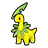
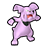

|
|
Espeon |
Starter Pokémon |
|
|
|
Umbreon |
Starter Pokémon |
|
|
|
Makuhita (Shadow) |
Miror B.Peon Trudly in Phenac City |
The first opportunity to Snag Makuhita is during the player's first visit to Phenac City.
The second opportunity is after defeating Evice at Realgam Tower. This battle can be repeated until Makuhita is Snagged. |
|

|
Bayleef (Shadow) |
Mystery Troop Verde in Phenac City, Realgam Tower, Snagem Hideout, or Shadow PKMN Lab |
The first opportunity to Snag Bayleef is when the player goes to leave Phenac City after seeing Shadow Makuhita. The player can only choose one of Bayleef, Quilava, or Croconaw at this time.
The second opportunity is at Realgam Tower. The player will only battle Verde here if they battled him in Phenac City. This battle can be repeated until Bayleef is Snagged.
The third opportunity is at Snagem Hideout. The player will only battle Verde here if they battled Rosso in Phenac City. This battle can be repeated until Bayleef is Snagged.
The fourth opportunity is at the Shadow PKMN Lab. The player will only battle Verde here if they battled Bluno in Phenac City. This battle can be repeated until Bayleef is Snagged.
|
|
|
Quilava (Shadow) |
Mystery Troop Rosso in Phenac City, Realgam Tower, Snagem Hideout, or Shadow PKMN Lab |
The first opportunity to Snag Quilava is when the player goes to leave Phenac City after seeing Shadow Makuhita. The player can only choose one of Bayleef, Quilava, or Croconaw at this time.
The second opportunity is at Realgam Tower. The player will only battle Rosso here if they battled him in Phenac City. This battle can be repeated until Quilava is Snagged.
The third opportunity is at Snagem Hideout. The player will only battle Rosso here if they battled Bluno in Phenac City. This battle can be repeated until Quilava is Snagged.
The fourth opportunity is at the Shadow PKMN Lab. The player will only battle Rosso here if they battled Verde in Phenac City. This battle can be repeated until Quilava is Snagged.
|
|
|
Croconaw (Shadow) |
Mystery Troop Bluno in Phenac City, Realgam Tower, Snagem Hideout, or Shadow PKMN Lab |
The first opportunity to Snag Bayleef is when the player goes to leave Phenac City after seeing Shadow Makuhita. The player can only choose one of Bayleef, Quilava, or Croconaw at this time.
The second opportunity is at Realgam Tower. The player will only battle Bluno here if they battled him in Phenac City. This battle can be repeated until Croconaw is Snagged.
The third opportunity is at Snagem Hideout. The player will only battle Bluno here if they battled Verde in Phenac City. This battle can be repeated until Croconaw is Snagged.
The fourth opportunity is at the Shadow PKMN Lab. The player will only battle Bluno here if they battled Rosso in Phenac City. This battle can be repeated until Croconaw is Snagged.
|
|
|
Misdreavus (Shadow) |
Rider Vant in Pyrite Town |
The player can battle Lon indefinitely. |
|
|
Noctowl (Shadow) |
Rider Nover in Pyrite Town |
The player can battle Nover indefinitely. |
|
|
Flaaffy (Shadow) |
St.Performer Diogo in Pyrite Town |
The player can battle Diogo indefinitely. |
|
|
Skiploom (Shadow) |
Rider Leba in Pyrite Town |
The player can battle Leba indefinitely. |
|
|
Quagsire (Shadow) |
Bandana Guy Divel in Pyrite Town |
The player can battle Nover indefinitely. |
|
|
Slugma (Shadow) |
Roller Boy Lon in Pyrite Town |
The player can battle Lon indefinitely. |
|
|
Furret (Shadow) |
Rogue Cail in Pyrite Town |
The first opportunity to Snag Furret is after talking with Duking and the thug in Pyrite Colosseum.
The second opportunity is after defeating Miror B.
The third opportunity is after Team Cipher attacks Mt. Battle.
The fourth opportunity is after defeating Evice at Realgam Tower and speaking with Nett about his email. This battle can be repeated until Furret is Snagged.
|
|
|
Yanma (Shadow) |
Cipher Peon Nore in Pyrite Building and Snagem Hideout |
The first opportunity to Snag Yanma is during the player's first visit to Pyrite Building.
The second opportunity is in the Snagem Hideout. Nore will appear here as part of a cycle of Cipher Peons, and will keep reappearing until Yanma is Snagged.
|
|
|
Remoraid (Shadow) |
Miror B.Peon Reath in Pyrite Building and Pyrite Cave |
The first opportunity to Snag Remoraid is during the player's first visit to Pyrite Building.
The second opportunity is in Pyrite Cave (Miror B.'s room) after defeating Evice at Realgam Tower. This battle can be repeated until Remoraid is Snagged.
|
|
|
Mantine (Shadow) |
Miror B.Peon Ferma in Pyrite Building and Pyrite Cave |
The first opportunity to Snag Remoraid is during the player's first visit to Pyrite Building.
The second opportunity is in Pyrite Cave (Miror B.'s room) after defeating Evice at Realgam Tower. This battle can be repeated until Remoraid is Snagged.
|
|
|
Qwilfish (Shadow) |
Hunter Doken in Pyrite Building |
The first opportunity to Snag Qwilfish is during the player's first visit to Pyrite Building.
The second opportunity is after defeating Miror B. This battle can be repeated until Qwilfish is Snagged. However, in this second battle, Qwilfish will not hold the Poison Barb.
|
|
|
Meditite (Shadow) |
Rider Twan in Pyrite Cave |
The first opportunity to Snag Meditite is during the player's first visit to Pyrite Cave.
The second opportunity is after defeating Dakim at Mt. Battle. This battle can be repeated indefinitely.
|
|
|
Dunsparce (Shadow) |
Rider Sosh in Pyrite Cave |
The first opportunity to Snag Dunsparce is during the player's first visit to Pyrite Cave.
The second opportunity is after defeating Dakim at Mt. Battle. This battle can be repeated indefinitely.
|
|
|
Swablu (Shadow) |
Hunter Zalo in Pyrite Cave |
The first opportunity to Snag Swablu is during the player's first visit to Pyrite Cave.
The second opportunity is after defeating Dakim at Mt. Battle. This battle can be repeated indefinitely.
|
|
|
Sudowoodo (Shadow) |
Miror B. in Pyrite Cave (Miror B.'s room), Realgam Tower, and Deep Colosseum |
The first opportunity to Snag Sudowoodo is during the player's first visit to Pyrite Cave.
The second opportunity is at Realgam Tower.
The third opportunity is in the Deep Colosseum. The Deep Colosseum challenge can be repeated indefinitely.
|
|
|
Plusle |
Obtained from Duking in Pyrite Town |
|
|
|
Hitmontop (Shadow) |
Cipher Peon Skrub in Agate Village, Shadow PKMN Lab, and Snagem Hideout |
The first opportunity to Snag Yanma is during the player's first visit to the Relic Stone.
The second opportunity is at the Shadow PKMN Lab.
The third opportunity is in the Snagem Hideout. Skrub will appear here as part of a cycle of Cipher Peons, and will keep reappearing until Hitmontop is Snagged.
|
|
|
Entei (Shadow) |
Dakim on Mt. Battle, Realgam Tower, and Deep Colosseum |
The first opportunity to Snag Entei is during the player's first visit to Mt. Battle.
The second opportunity is at Realgam Tower.
The third opportunity is in the Deep Colosseum. The Deep Colosseum challenge can be repeated indefinitely.
|
|
|
Ledian (Shadow) |
Cipher Peon Kloak in The Under and Snagem Hideout |
The first opportunity to Snag Ledian is after the player delivers the Powerup Part to Nett in the Kids Grid.
The second opportunity is in the Snagem Hideout. Kloak will appear here as part of a cycle of Cipher Peons, and will keep reappearing until Hitmontop is Snagged.
|
|
|
Suicune (Shadow) |
Venus in The Under, Realgam Tower, and Deep Colosseum |
The first opportunity to Snag Suicune is in the TV Studio.
The second opportunity is at Realgam Tower.
The third opportunity is in the Deep Colosseum. The Deep Colosseum challenge can be repeated indefinitely. If Suicune is Snagged at the Deep Colosseum, it will know Hydro Pump instead of Surf.
|
|
|
Gligar (Shadow) |
Hunter Frena in The Under and Snagem Hideout |
The first opportunity to Snag Gligar is during the player's chase of Venus to the Under Subway.
The second opportunity is in the Snagem Hideout, after receiving the email about Shadow Smeargle and Ursaring. Hunter Frena will alternate her position with Chaser Liaks until both their Shadow Pokémon are Snagged.
|
|
|
Stantler (Shadow) |
Chaser Liaks in The Under and Snagem Hideout |
The first opportunity to Snag Stantler is during the player's chase of Venus to the Under Subway.
The second opportunity is in the Snagem Hideout, after receiving the email about Shadow Smeargle and Ursaring. Chaser Liaks will alternate her position with Hunter Frena until both their Shadow Pokémon are Snagged.
|
|
|
Piloswine (Shadow) |
Bodybuilder Lonia in The Under and Snagem Hideout |
The first opportunity to Snag Piloswine is during the player's chase of Venus to the Under Subway.
The second opportunity is in the Snagem Hideout, after receiving the email about Shadow Smeargle and Ursaring. Bodybuilder Lonia will alternate her position with Rider Nelis until both their Shadow Pokémon are Snagged.
|
|
|
Sneasel (Shadow) |
Rider Nelis in The Under and Snagem Hideout |
The first opportunity to Snag Sneasel is during the player's chase of Venus to the Under Subway.
The second opportunity is in the Snagem Hideout, after receiving the email about Shadow Smeargle and Ursaring. Rider Nelis will alternate her position with Bodybuilder Lonia until both their Shadow Pokémon are Snagged.
|
|
|
Aipom (Shadow) |
Cipher Peon Cole in Shadow PKMN Lab |
The first opportunity to Snag Aipom is during the player's first visit to the Shadow PKMN Lab.
The second opportunity is after meeting Verde, Rosso, or Bluno at the Snagem Hideout and speaking with Nett about his email. This battle can be repeated until Aipom is Snagged.
|
|
|
Murkrow (Shadow) |
Cipher Peon Lare in Shadow PKMN Lab |
The first opportunity to Snag Murkrow is during the player's first visit to the Shadow PKMN Lab.
The second opportunity is after meeting Verde, Rosso, or Bluno at the Snagem Hideout and speaking with Nett about his email. This battle can be repeated until Murkrow is Snagged.
|
|
|
Forretress (Shadow) |
Cipher Peon Vana in Shadow PKMN Lab |
The first opportunity to Snag Forretress is during the player's first visit to the Shadow PKMN Lab.
The second opportunity is after meeting Verde, Rosso, or Bluno at the Snagem Hideout and speaking with Nett about his email. This battle can be repeated until Forretress is Snagged.
|
|
|
Vibrava (Shadow) |
Cipher Peon Remil in Shadow PKMN Lab |
The first opportunity to Snag Vibrava is during the player's first visit to the Shadow PKMN Lab.
The second opportunity is after meeting Verde, Rosso, or Bluno at the Snagem Hideout and speaking with Nett about his email. This battle can be repeated until Vibrava is Snagged.
|
|
|
Ariados (Shadow) |
Cipher Peon Lesar in Shadow PKMN Lab |
The first opportunity to Snag Ariados is during the player's first visit to the Shadow PKMN Lab.
The second opportunity is after meeting Verde, Rosso, or Bluno at the Snagem Hideout and speaking with Nett about his email. This battle can be repeated until Ariados is Snagged.
|
|

|
Granbull (Shadow) |
Cipher Peon Tanie in Shadow PKMN Lab |
The first opportunity to Snag Granbull is during the player's first visit to the Shadow PKMN Lab.
The second opportunity is after meeting Verde, Rosso, or Bluno at the Snagem Hideout and speaking with Nett about his email. This battle can be repeated until Granbull is Snagged.
|
|
|
Raikou (Shadow) |
Ein in Shadow PKMN Lab, Realgam Tower, and Deep Colosseum |
The first opportunity to Snag Raikou is on the player's first visit to the Shadow PKMN Lab.
The second opportunity is at Realgam Tower.
The third opportunity is in the Deep Colosseum. The Deep Colosseum challenge can be repeated indefinitely.
|
|
|
Delibird (Shadow) |
Cipher Peon Arton in Realgam Tower and Snagem Hideout |
The first opportunity to Snag Delibird is on the player's first visit to Realgam Tower.
The second opportunity is in the Snagem Hideout. Arton will appear here as part of a cycle of Cipher Peons, and will keep reappearing until Delibird is Snagged.
|
|
|
Sunflora (Shadow) |
Cipher Peon Baila in Realgam Tower and Snagem Hideout |
The first opportunity to Snag Sunflora is on the player's first visit to Realgam Tower.
The second opportunity is in the Snagem Hideout. Baila will appear here as part of a cycle of Cipher Peons, and will keep reappearing until Sunflora is Snagged.
|
|
|
Heracross (Shadow) |
Cipher Peon Dioge in Realgam Tower and Snagem Hideout |
The first opportunity to Snag Heracross is on the player's first visit to Realgam Tower.
The second opportunity is in the Snagem Hideout. Dioge will appear here as part of a cycle of Cipher Peons, and will keep reappearing until Heracross is Snagged.
|
|
|
Skarmory (Shadow) |
Gonzap in Realgam Tower and Snagem Hideout |
The first opportunity to Snag Skarmory is on the player's first visit to Realgam Tower.
The second opportunity is in the Snagem Hideout, after receiving the email about Shadow Smeargle and Ursaring. This battle can be repeated until Skarmory is Snagged.
|
|
|
Miltank (Shadow) |
Bodybuilder Jomas in the Tower Colosseum |
The first opportunity to Snag Miltank is on the player's first visit to the Tower Colosseum. The Tower Colosseum challenge can be repeated indefinitely. |
|
|
Absol (Shadow) |
Rider Delan in the Tower Colosseum |
The first opportunity to Snag Absol is on the player's first visit to the Tower Colosseum. The Tower Colosseum challenge can be repeated indefinitely. |
|
|
Houndoom (Shadow) |
Cipher Peon Nella in the Tower Colosseum |
The first opportunity to Snag Houndoom is on the player's first visit to the Tower Colosseum. The Tower Colosseum challenge can be repeated indefinitely. |
|
|
Tropius (Shadow) |
Cipher Peon Ston in the Tower Colosseum |
The first opportunity to Snag Tropius is on the player's first visit to the Tower Colosseum. The Tower Colosseum challenge can be repeated indefinitely. |
|
|
Metagross (Shadow) |
Nascour in the Tower Colosseum |
The first opportunity to Snag Metagross is on the player's first visit to the Tower Colosseum. The Tower Colosseum challenge can be repeated indefinitely. |
|
|
Tyranitar (Shadow) |
Evice in the Tower Colosseum |
The first opportunity to Snag Tyranitar is on the player's first visit to the Tower Colosseum. The Tower Colosseum challenge can be repeated indefinitely. |
|
|
Smeargle (Shadow) |
Team Snagem Biden in Snagem Hideout |
The first opportunity to Snag Smeargle is in the Snagem Hideout, after receiving the email about Shadow Smeargle and Ursaring. This battle can be repeated until Smeargle is Snagged. |
|
|
Ursaring (Shadow) |
Team Snagem Agrev in Snagem Hideout |
The first opportunity to Snag Ursaring is in the Snagem Hideout, after receiving the email about Shadow Smeargle and Ursaring. This battle can be repeated until Ursaring is Snagged. |
|
|
Shuckle (Shadow) |
Deep King Agnol in Deep Colosseum |
The first opportunity to Snag Shuckle is in the Deep Colosseum. The Deep Colosseum challenge can be repeated indefinitely. |
|
|
Togetic (Shadow) |
Cipher Peon Fein at the Outskirt Stand |
The first opportunity to Snag Togetic is at the Outskirt Stand after Snagging the other 47 Shadow Pokémon. This battle can be repeated until Togetic is Snagged. |
|
|
Ho-Oh (Shadow) |
Mt. Battle (Battle Mode, Singles or Doubles) |
Ho-Oh can only be obtained after Purifying all 48 Shadow Pokémon and beating Mt. Battle without changing the party, using a party of Pokémon from Story Mode. It will be added to the first free slot in the player's PC. |